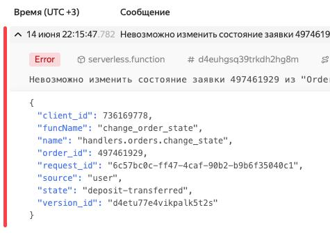

Страница 1
Почему я ломаю обратную совместимость
posted on 2025-06-15
Сначала хотел сделать пост про то, почему я редко сохраняю обратную совместимость в своих open-source библиотеках. Вот недавно как раз сделал обновление библиотеки Reblocks, в которой поломал обратную совместимость, причем довольно серьезно.
Переделал одновременно и макрос, который отвечает за рендеринг в HTML, и еще более серьезно переделал роутинг — то есть часть, которая отвечает за преобразование URL и выбор того, какую страницу по этому URL показать.
Изначально идея поста была в том, чтобы сказать, что в большинстве случаев обратную совместимость может быть сохранить очень дорого. То есть, если вы хотите сохранить обратную совместимость при каких-то серьезных изменениях, то, скорее всего, ваш код будет обрастать довольно значительным количеством костылей. Костыли мы все не любим, поэтому я бы предпочел этих ситуаций избегать.
В итоге иногда с программным обеспечением проще отказаться от сохранения обратной совместимости. Но даже если вы так делаете, то лучше качественно описать те изменения, которые были сделаны, и предложить пути по миграции со старого кода на новый. Я обычно в своих проектах всегда веду change log, в котором подробно такие изменения описываю.
И вот недавно мне эта обратная несовместимость как раз-таки довольно больно стрельнула. Мне потребовалось обновлять сайт https://ultralisp.org, и в нем довольно много пришлось переделывать из-за того, что как раз-таки обратной совместимости в новом Reblocks не было. Но зато сам по себе код Reblocks остался чистым, хотя мне пришлось перепилить для поддержки новой версии еще несколько библиотек, которые его используют.
Иногда обратную совместимость сохранить полезно. Но это стоит делать в том случае, если поддержать ее достаточно дешево и там не будет каких-то адовых костылей.
Приходилось ли вам ломать обратную совместимость в своих библиотеках или каком-то ином программном коде? Если да, то расскажите, чем это обернулось. Были ли какие-то серьезные последствия? Или, наоборот, вы рады принятому решению?
Обсудить пост в Telegram канале.Про структурное логгирование в Python и Yandex Cloud Function
posted on 2025-06-14

Сегодня я продолжал возиться со своим pet-project, который одной ногой работает в SaleBot, а второй - использует Yandex Cloud Functions и YDB для того, чтобы запускать более сложную бизнес-логику.
И сегодня полдня я провел за тем, что пытался правильно настроить структурное логирование так, чтобы в Яндекс.Облаке было хорошо и красивенько видно все ошибки и отладочные сообщения от моего бота. Очень странно, что документация самого Яндекс Клауда не дает подробных примеров того, как настроить логирование в Python правильным образом.
Оно говорит очень просто: логируйте все в stdout, и мы как-то сохраним эти логи. Но при этом сами примеры, которые они приводят, таковы, что, например, если у вас логируется stacktrace, то он размазывается по всем сообщениям. Stacktrace при этом разделяется на отдельные сообщения лога, и совершенно непонятно, что происходит. В интерфейсе Yandex Cloud просто какая-то каша.
Вот, я покопал немножечко эту тему и нашел, что на самом-то деле Яндекс Клауд умеет разбирать логи в виде JSON. Так что странно, что нет у них в документации по использованию Python для Cloud Functions примера, как правильно настроить логгинг правильно.
Итого я нашел библиотечку, которая реализует JSON handler для стандартного модуля логинг. И еще я нашел библиотеку, которая добавляет к этому возможности структурного логирования.
Структурное логирование полезно тем, что помимо сообщения в виде текста, вы можете в свои логи добавлять какие-то дополнительные поля. Да, конечно, это можно и так делать с помощью аргумента extra. Но в этом случае вы вынуждены передавать этот аргумент extra в каждое сообщение лога.
А представьте, например, у нас в API пришел запрос в котором известен client_id. И мы хотим, чтобы этот client_id присутствовал во всех записях логов. Например, там, каких-то отладочных логов, при обращении к базе. Короче, если ошибка произойдет, там обязательно должен быть client_id, чтобы можно было по конкретному клиенту выбрать все логи, связанные с этим клиентом.
И вот, чтобы не прописывать при логировании client_id в каждое сообщение, можно использовать структурное логирование. Он работает, как контекстный менеджер, которому вы один раз на входе в API метод говорите, что пришел такой-то client_id, а далее, во все логи внутри этого контекстного менеджера автоматически подставится это поле client_id.
И вот я сегодня использовал этот подход, объединил JSON Logger и вот эту утилиту для структурного логирования, и получилось, по-моему, очень классно.
Думаю даже сделать такую заготовку, которая позволит быстро стартануть и создать Yandex Cloud Function на Python со всеми готовыми настройками для логирования и для работы с YDB.
Что думаете насчет такой заготовочки? Была бы она кому-нибудь еще полезна? Если что, пишите в комментариях, выложу куда-нибудь на GitHub. Пока!
Обсудить пост в Telegram канале.Как прошёл AI Code Jam в Яндексе
posted on 2025-06-04

Вчера у нас был внутренний яндексовый хакатон. Мы изучали, как работают агентские системы. Задания можно было выбрать любые, мы в нашей команде решили написать агентскую систему для работы с социальной сетью.
Фишка хакатона была в том, что решение нужно было полностью на vibe-кодить, то есть решение должно было быть написано нейронкой, а не вручную. Нам нейросеть помогла описать архитектуру системы. Довольно быстр: накидала её модули и даже сгенерировала диаграмму в формате Mermaid. Получилось очень круто! Затем мы приступили к реализации.
У нас уже были некоторые примеры MCP и агентов, которые дали организаторы хакатона. Нейронке очень помогли эти примеры, потому что можно было указать ей на них и сказать: «Сделай вот похожим образом, но с такой-то логикой». Должен заметить, что никто из троих членов моей команды не пробовал прежде писать MCP сервера, и даже с примерами сомневаюсь что мы бы справились так быстро как нейросеть.
Для тех, кто не в теме, немножечко поясню, что такое MCP и что такое агенты. MCP — это специальный сервер, который позволяет нейросети совершать определённые действия в других системах или даже в физическом мире. Например, можно сделать MCP, которая будет давать нейросети интерфейс для того, чтобы искать анекдоты на «Анекдот.ру». Или можно сделать железного боевого робота и дать сделать MCP для управления этим роботом. Главное — не забудьте внедрить в неё три правила робототехники Азимова :-)
Что же такое агенты? Агенты — это, по сути, фрагменты программы, где прописана логика и она объединена с некими инструментами, которые агент может использовать в рамках своей задачи. Например, можно сделать агента, который умеет шутить на определённую тему, и дать ему в качестве инструмента доступ к MCP, который умеет искать анекдоты на сайте «Анекдот.ру». Тогда такого агента можно будет попросить создать оригинальный анекдот, скажем, про русского, немца и француза, и убедиться что ничего похожего нет на сайте. Тогда агент с помощью своего инструмента, который мы ему предоставили, сможет пойти поискать существующие анекдоты на заданную тему, а затем на их базе придумать свой, отличющийся от прочих. Или нейронка может решить сгенерировать анекдот и только писать похожие - тут уж всё зависит от промпта, который вы зададите агенту.
А ещё фишка агентов в том, что их можно объединять в агентские системы, когда один агент может обращаться к другому. При этом агенты работают в команде и у каждого из них своя роль, определяемая промптом. Качество работы такой системы должно быть выше, чем качесто одной нейронки с большим промптом, который пытается охватить все аспекты работы.
По нашей задумке, агентская система для работы с соцсетью должна была состоять из главного агента, с которым общается клиент, и его подчинённых агентов, которые умеют делать разные вещи. Например, один агент отвечал за получение данных из соцсети, парсинг страниц и выдачу их в виде JSON. Второй агент умел писать посты в разных стилистиках. Третий агент должен был уметь фильтровать контент в зависимости от того, какие предпочтения у пользователя. И четвёртый подчинённый агент должен был уметь суммировать переписку в разных тредах.
К сожалению, за время хакатона (он длился всего 3 часа) мы сумели реализовать только два MCP: первый, который умеет парсить страницы, и второй, который умеет переписывать контент в нужную стилистику. Думаю, за день вполне можно было бы довести всю систему до ума. Но даже так считаю, что у нас неплохие шансы на победу, потому что из 26 команд, которые участвовали в хакатоне, хоть какие-то решения сдали только 10. Пожелайте нам удачи!
Обсудить пост в Telegram канале.Обещанного три года ждут. Или нет?
posted on 2025-05-25

Ещё в марте говорил, что буду держать вас в курсе того, как проходит моё обучение в университете Zerocoder. Но в последнее время ничего не писал. На самом деле был очень занят — дорабатывал свои библиотеки, связанные с Reblocks.
В последнем посте я показывал, как пытался с помощью нейросети сделать библиотеку, похожую на обработчик роутов в Django. Тогда мне AI наворотил всякой херни. Последние полтора месяца почти всё свободное время я потратил на доработку этой библиотеки, а также самого Reblocks и других библиотек, которые его используют. Ну и, разумеется, какое-то время отнимало обучение в Zerocoder.
За это время я прошёл там три модуля обучения. В первом модуле мы научились проектировать чат-ботов. Во втором — собирать их на конструкторе Salebot. А третий модуль был посвящён тому, как выстраивать коммуникацию с заказчиком, если работаешь на фрилансе.
Прикольно то, что в рамках этого последнего модуля у нас были задания, которые требуют упаковать свой профиль на одной из фриланс-платформ. Нам показали, как сделать привлекательный профиль и как правильно описать своё портфолио. Почти во всех этих активностях так или иначе Zerocoder предлагал использовать AI. Например, с помощью нейросети можно определить портреты своих желаемых заказчиков, выявить уникальное торговое предложение для каждого из типов заказчиков.
Идя на этот курс я понимал, что само программирование ботов для меня представляет мало интереса — такой опыт тоже был. А вот опыт продвижения своих услуг, понимание на что способны современные NoCode инструменты и AI, опыт создания маркетинговых воронок внутри конструктора — это было очень интересно.
Прикольно то, что через какое-то время после того, как я завёл свой профиль на фриланс-платформе, ко мне в личку пришёл какой-то чел, которому нужно было сделать бота. Я даже не искал этого заказчика, он сам пришел. Пообщавшись с ним, решил, что проект вполне себе интересный — там довольно сложная логика, которую нужно реализовать и пока непонятно получится ли использовать только конструктор.
Теперь буду пробовать собрать для этого чела бота на конструкторе. Скорее всего, возможностей конструктора будет недостаточно, и придётся написать какие-то веб-хуки, которые будут работать с базой данных. Пока что мы на этапе проектирования: уже сформировали технические требования и согласовываем схему будущего бота.
О том, что будет дальше с этим проектом, расскажу как-нибудь позднее.
Обсудить пост в Telegram канале.Нейронка уже пишет на Common Lisp лучше стажера
posted on 2025-04-05
Сейчас за час, не написав ни строчки кода сделал такую библиотеку:
https://github.com/40ants/routes/pull/1/files
там и тесты есть с документацией.
Многое конечно еще предстоит поправить, но получилось неплохо.
Использовал VSCode + Roo Code плагин + Claude 3.7 от Anthropic.
Оно даже тесты само умеет запускать в терминале, смотреть что падает и чинить. Сначала пробовала запускать через голый SBCL, но адаптировалась, когда я подсказал использовать для запуска qlot exec ros run.
Единственный момент, который огорчает – в течении этого часа я чувствовал себя, как прораб миллиарда обезьян, пишущих Войну и Мир. И не получил ни капли от того количества эндорфина, котрый обычно получаю, программируя на Common Lisp.
Завтра вчитаюсь внимательно в то что получилось, и буду этот код рефакторить с помощью нейронки.
Обсудить пост в Telegram канале.Несколько слов о Zettelkasten и том как я веду заметки
posted on 2025-03-24

Сегодня один из коллег во внутренней соцсети упомянул зеттелькастен и описал то свой способ ведения заметок в Sublime Text. У него довольно системный подход к тому, как заметки должны быть структурированы.
Когда-то я тоже пытался структурировать заметки, но в итоге перешел на “кучу” – заметки без структуры, с одними лишь заголовками и связями между ними.
При этом некоторые заметки – просто на какую-то определенную тему, а некоторые все же имеют “структуру” и относятся к целям и планам по методике 12 Недельного Года. Есть цели на год и планы на неделю. План на неделю – в одном файле где есть подразделы на каждый день. И в этих днях уже идет работа с тикетами и тд.
Касаемо отображения связей между заметками в виде графа – не вижу в этом большого смысла. Обычно достаточно возможности посмотреть списки входящих/исходящих ссылок. Важнее хороший поиск по заметкам и удобный способ создания кросс-ссылок.
Всё это я конечно же веду в Emacs и его замечательном режиме Org Mode. Из-за этого плагина не могу теперь слезть с Emacs на LEM.
P.S. – Кстати и этот пост изначально был написан как одна из заметок в моей "куче" :)
Обсудить пост в Telegram канале.Чем может быть полезен Yandex Workflow?
posted on 2025-03-18

Как рассказывал недавно, в последнее время смотрю разные вебинары от университета Зерокодер. И вот в одном из них показывали как бот работает в связке нескольких конструкторов:
- Puzzlebot – в нем задавались разные команды бота
- При определенной команде управление передавалось в Make.com, где был описан workflow по которому вызывался OpenAI с определенными промптами и бот таким образом обрабатывал произвольный текст от пользователя, отвечая текстом, сгенерированным с помощью ИИ.
По факту, в этом воркфлоу были блоки которые умеют обращаться по API в OpenAI, Puzzlebot (а может и напрямую в телеграм, тут я не до конца понял) + какие-то условные ветвления.
А сегодня, совершенно случайно, я узнал, что у Яндекса тоже есть lowcode инструмент для описания последовательности действий. И по странному совпадению (в закрепленном посте кстате сказано, что я не верю в совпадения, есть только связи между всем и вся!) - именно сегодня был вебинар про эту часть Яндекс Облака/
Назвывается она Yandex Workflow. В целом, выглядит годно, но пока мало интеграций, а те что есть ориентированны на другие сервисы, которые есть в Яндекс Облаке.
Хорошая новость в том, что можно дописывать блоки workflow в виде CloudFunctions – это кусочки кода которые будут запускаться по событию.
Ещё из интересного – есть поддержка блоков которые обращаются к YandexGPT. А так же интеграция с базой данных YDB.
То есть, на этой штуке вполне можно собирать части бота которым нужно сработать в определенном сценарии, сложить куда-то или передать дальше.
В рамках вебинара показывали, как собрать воркфлоу, которая создает уменьшенные версии картинок, для загружаемых в хранилище фотографий.
Кому интересно, можете посмотреть вебинар в записи на YouTube.
Обсудить пост в Telegram канале.Я очень люблю учиться. Каждый день нахожу что-то новое!
posted on 2025-03-14

Чему научился на этой неделе?
Посмотрел парочку уроков по SEO - понял как и зачем собирать слова для семантического ядра и как их потом кластеризовать.
Узнал про такую базу как Supabase. Это opensource аналог Airbase, но на базе PostgreSQL и со всеми плюшками реляционных БД + API над ним так что в базу можно ходить прямо из вебклиента или из мобильного приложения. На базе этой штуки сделан проект SQLNoir, про который я недавно писал в канале.
А ещё, на этой неделе начался курс обучения разработке чатботов от Zerocoder, но уроки первой недели не очень для меня интересны, потому что там дают базу тем, кто вообще не в курсе что такое боты, как они работают и прочее. Надеюсь, что дальше будет что-то поинтереснее, про AI, маркетинг телеграмм ботов, продвижение и тд. Буду держать вас в курсе и давать в канал еженедельные апдейты.
Кстати, ещё в тему ботов и заказной разработки вообще, сегодня закочил слушать аудио-книгу Отчаянные аккаунт-менеджеры Бориса Шпрута. Она не про IT, но про взаимодействие с клиентами. Почему я вдруг начал изучать эту тему? Да потому что для того, чтобы продвигать Common Lisp в массы, надо создавать продукты и рабочие места. А для того, чтобы создавать рабочие места, нужно основать бригаду, гильдию, компанию наконец, которая бы занималась созданием софта на CL. А для кампании важны заказчики. Книга как раз про то, как общаться с заказчиками чтобы сотрудничество были взаимовыгодным. Книга классная, рекомендую!
А у вас чего новенького? Давайте обсудим в комментариях!
Обсудить пост в Telegram канале.Сжатый курс про использование нейросетей для программирования на Python
posted on 2025-03-14

Тема не совсем про lisp, но я тут последнее время смотрю много вебинаров университета Zerocoder и сегодня они прислали рекламку нового миникурса про использование нейросетей для создания продвинутого Python бота, на который можно попасть бесплатно, если успеешь в первую 1000 откликнувшихся.
Уж не знаю насколько продвинутого бота они собираются делать, но на всякий случай записался – интересно посмотреть что выйдет.
А вообще моя мечта – научиться обучать нейросетку писать сносный код на Common Lisp. Пока что по большей части неюзабельное что-то выходит – то с синтаксисом косяки, то нейронка выдумывает несуществующие библиотеки.
Думаю на курсе как раз позадавать вопросы на тему дообучения нейронки на своих исходниках – так можно было бы обучить её на всех либах что есть в Quicklisp! Уверен, выйдет круто!
Обсудить пост в Telegram канале.Как играючи изучить SQL?
posted on 2025-03-11

Сегодня случайно наткнулся на проект, в котором предлагается изучать SQL в виде игры в детектива. Проект называется SQL Noir.
🕵️ В каждом уроке тебе предлагается расследовать преступление, кражу убийство и тд. Дается некоторая вводная и предварительное направление поисков. А сами поиски предлагается делать исследуя данные в базе данных с помощью запросов. Запросы можно прямо на сайте делать и тут же видеть результат. В базе отдельные таблички с описанием разных мест, персонажей, улик и так далее.
Первые уроки довольно тривиальные. Да и всего в проекте пока только 4 урока. Однако к добавлению новых криминальных драм приглашаются все желающие. У ребят на GitHub довольно подробно описано, как добавить новый детективный сценарий в эту игру.
Думаю такое может быть интересно в первую очередь полным новичкам, и быть может даже детям. В школах SQL уже преподают?
Обсудить пост в Telegram канале.Created with passion by 40Ants